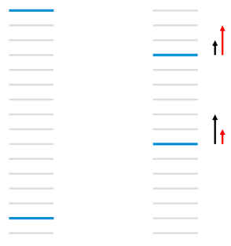

LTR问题
搜索引擎根据用户输入的Query检索得到最相关的topk个网页；推荐引擎根据用户的兴趣偏好推荐用户最感兴趣的topk个文章。涉及到topk的问题，都会涉及到排序的问题。LTR(Learning To Rank)是在处理排序问题时采用机器学习方法来训练模型的方法。可以将LTR方法分为 point-wise、pair-wise、list-wise 三类. 之前介绍的Prank 算法属于point-wise.
本文介绍的三个模型都属于 pair-wise.
RankNet
| 符号 | 含义 |
|---|---|
| $f(x:w)$ | RankNet 底层模型 |
| $s_i$ | $s=f(x)$ |
| $ U_i $ | index i url |
| $U_i \rhd U_j$ | 样本中 $ U_i $ 排在 $ U_j $ 前面 |
| $P_{ij} = P(U_i \rhd U_j)$ | 模型计算出的 $ U_i $ 排在 $ U_j $ 前面的概率 |
| $\bar P_{ij}$ | 样本中 $ U_i $ 排在 $ U_j $ 前面的概率 |
| $C= C_{ij} = C(s_i, s_j) = C(s_i - s_j) $ | 损失函数 |
| $I$ | $\{i,j\} \in I$ ，样本中所有 url pair对 |
| $\eta$ | 梯度下降中的步长 |
RankNet像是一个框架，它将我们常用的那些模型赋予了LTR功能。比如回归模型不能学习到样本中rank信号，将其使用RankNet包装以后就可以学习到Rank信号。
For RankNet, the underlying model can be any model for which the output of the model is a differentiable function of the model parameters
此处 underlying model 表示为 $f(x:w)$. 实际应用中这个模型可以是简单的回归模型，也可以是复杂的神经网络模型。(原论文中 $f(x:w)$是神经网络模型)
对于一个$U_i$, $f(x:w)$的算分结果为 :
$$
s_i = f(x:w) \tag1
$$
下面介绍RankNet是怎么将一个普通的模型赋予LTR功能的。
令 $U_i \rhd U_j$ 表似事件 $U_i$ 排序比 $U_j$ 更加靠前，则通过模型计算得到该事件的概率为：
$$
P_{ij} \equiv P(U_i \rhd U_j) \equiv \frac{1}{1+e^{-\sigma(s_i - s_j)}} \tag 2
$$
在训练样本的同一个query对应的所有url中，令：
$$
S_{ij} =
\left \{
\begin {align}
1; U_i \rhd U_j \\
0; U_i \equiv U_j \\
-1; U_i \lhd U_j
\end {align}
\right . \tag 3
$$
则样本中 $U_i \rhd U_j$ 的概率可以表示为：
$$
\bar P_{ij} = \frac12(1 + S_{ij}) =
\left \{
\begin {align}
1; U_i \rhd U_j \\
\frac12; U_i \equiv U_j \\
0; U_i \lhd U_j
\end {align}
\right . \tag 4
$$
RankNet的损失函数可以使用交叉熵得到：
$$
C(s_i - s_j)= - \bar P_{ij} \log P_{ij} - (1 - \bar P_{ij}) \log (1 - P_{ij}) \tag 5
$$
此时：
$$
\frac{\partial C(s_i - s_j)}{\partial s_{i}} = \sigma (\frac12 (1-S_{ij}) - \frac{1}{1+e^{\sigma(s_i - s_j)}}) = - \frac{\partial C(s_i - s_j)}{\partial s_{j}} \tag 6
$$
使用stochastic gradient descent更新 $w_k$ 的迭代公式
$$
w_k \rightarrow w_k - \eta \frac{\partial C_{ij}}{\partial{w_k}} = w_k - \eta (\frac{\partial C_{ij}}{\partial s_i} \frac{\partial s_i}{\partial{w_k}} + \frac{\partial C_{ij}}{\partial s_j} \frac{\partial s_j}{\partial{w_k}}) \tag 7
$$
$$
\delta C = \sum_k \frac{\partial C}{\partial{w_k}} \delta w_k =\sum_k \frac{\partial C}{\partial{w_k}} (-\eta \frac{\partial C}{\partial{w_k}}) = -\eta \sum_k (\frac{\partial C}{\partial{w_k}})^2 \lt 0 \tag 8
$$
Speeding Up Ranknet Training
使用上述方法更新权重 $w$ 是相当慢的, 其时间复杂度为$O(n^2)$ (n为一个query下doc的数量). 下面介绍一种方式使时间复杂度降到 $O(n)$ .
对 (7) 中的梯度 $\frac{\partial C_{ij}}{\partial{w_k}}$ 进行分解:
$$
\begin {align}
\frac{\partial C(s_i - s_j)}{\partial{w_k}} &= \frac{\partial C(s_i - s_j)}{\partial s_i} \frac{\partial s_i}{\partial{w_k}} + \frac{\partial C(s_i - s_j)}{\partial s_j} \frac{\partial s_j}{\partial{w_k}} \\
&= \sigma (\frac12 (1-S_{ij}) - \frac{1}{1+e^{\sigma(s_i - s_j)}})(\frac{\partial s_i}{\partial{w_k}} - \frac{\partial s_j}{\partial{w_k}}) \\
&= \lambda_{ij}(\frac{\partial s_i}{\partial{w_k}} - \frac{\partial s_j}{\partial{w_k}})
\end {align} \tag 9
$$
此处令
$$
\lambda_{ij} = \frac{\partial C(s_i - s_j)}{\partial s_{i}} = - \frac{\partial C(s_i - s_j)}{\partial s_{j}} = \sigma (\frac12 (1-S_{ij}) - \frac{1}{1+e^{\sigma(s_i - s_j)}}) \tag {10}
$$
可以将(9)看做三部分:
- $\frac{\partial C}{\partial{w_k}}$ : 损失函数在模型$f(x)$参数 $w_k$ 方向上梯度的分量。
- $(\frac{\partial s_i}{\partial{w_k}} - \frac{\partial s_j}{\partial{w_k}})$: 只与模型 $f(x)$ 有关。即打分模型部分
- $\lambda_{ij}$: 只与 排序功能有关。 所以 $\lambda_{ij}$ 是与排序有关的部分。可以理解为：模型经过 $U_i, U_j$ 这一url对训练后 模型参数 $w_k$ 的更新大小的度量，使样本$U_i, U_j$ 的预测排序更加贴近样本排序。
定义 $I$ 为同一query下，所有的url对的index的集合， 并且任何一个url对只能在 $I$ 中出现过一次。即，$U_i \rhd U_j$ 且$\{i,j\} \in I$。例如：有三个url，其相关性满足 $U_1 \rhd U_2 \rhd U_3$，那么集合$I$中就包含{(1,2), (1,3), (2,3)}共三个pair。
在集合 $I$ 中的所有url对都满足 $U_i \rhd U_j$ ，$S_{ij} = 1, \bar P_{ij}=1$。 损失函数变为：
$$
C(s_i - s_j)= - \log P_{ij} = -\log \frac{1}{1+e^{-\sigma(s_i - s_j)}}
$$
$\lambda_{ij}$ 变为：
$$
\begin {align}
\lambda_{ij} = \frac{\partial C(s_i - s_j)}{\partial s_{i}} &= \sigma (- \frac{1}{1+e^{\sigma(s_i - s_j)}})\\
&= - \frac{\sigma}{1+e^{\sigma(s_i - s_j)}}
\end {align} \tag {11}
$$
可以对 $\lambda$ 进一步变化。考察一个query下的 $U_i$， 分为两部分: 所有排在$U_i$后面的 url 的集合 $I_{i-}$; 所有排在$U_i$前面的 url 的集合 $I_{-i}$; 可以定义与 $U_i$ 有关的 $\lambda_i$ :
$$
\lambda_i = \sum_{m\in I_{i-}} \lambda_{im} - \sum_{n \in I_{-i}}\lambda_{ni} \tag {12}
$$
To compute $\lambda_i$ (for url $U_i$), we find all $m$ for which $\{i, m\} \in I$ and all $n$ for which $\{n, i\} \in I$ . For the former, we increment $\lambda_i$ by $\lambda_{i m}$ , and for the latter, we decrement $\lambda_i$ by $\lambda_{ni}$ . For example, if there were just one pair with $U1 \rhd U2$ , then $I = \{\{1, 2\}\}$ , and $\lambda_1 = \lambda_{12} = −\lambda_2$ .
上面介绍了准备知识, 线面进入正题.
我们采用 mini-batch的方式更新 $w_k$ .其中每一个 batch 的训练数据为一个query下所有url对，即 $\{i,j\} \in I$ 。
$$
\begin {align}
w_k &\rightarrow w_k - \eta \sum_{\{i,j\} \in I} \frac{\partial C}{\partial{w_k}} \\
&= w_k - \eta \sum_{\{i,j\} \in I} (\frac{\partial C}{\partial s_i} \frac{\partial s_i}{\partial{w_k}} + \frac{\partial C}{\partial s_j} \frac{\partial s_j}{\partial{w_k}}) \\
&= w_k - \eta \sum_{\{i,j\} \in I} \lambda_{ij}(\frac{\partial s_i}{\partial{w_k}} - \frac{\partial s_j}{\partial{w_k}}) \\
&\equiv w_k - \eta \sum_i \lambda_i \frac{\partial s_i}{\partial{w_k}}
\end {align} \tag {13}
$$
其中 $\lambda_i$ 可以由公式 (1), (11) 和 (12) 计算得到.
下面举例说明 $\sum_{\{i,j\} \in I} \lambda_{ij}(\frac{\partial s_i}{\partial{w_k}} - \frac{\partial s_j}{\partial{w_k}}) \equiv \sum_i \lambda_i \frac{\partial s_i}{\partial{w_k}}$ 。
例如有三个url，其相关性满足 $U_1 \rhd U_2 \rhd U_3$，那么集合$I$中就包含{(1,2), (1,3), (2,3)}共三个pair。此时：
$$
\begin {align}
\sum_{\{i,j\} \in I} \lambda_{ij}(\frac{\partial s_i}{\partial{w_k}} - \frac{\partial s_j}{\partial{w_k}}) &= \lambda_{12}(\frac{\partial s_1}{\partial{w_k}} - \frac{\partial s_2}{\partial{w_k}}) + \lambda_{13}(\frac{\partial s_1}{\partial{w_k}} - \frac{\partial s_3}{\partial{w_k}}) + \lambda_{23}(\frac{\partial s_2}{\partial{w_k}} - \frac{\partial s_3}{\partial{w_k}}) \\
&=(\lambda_{12}+\lambda_{13})\frac{\partial s_1}{\partial{w_k}}+(\lambda_{23} -\lambda_{12})\frac{\partial s_2}{\partial{w_k}}+(-\lambda_{13} -\lambda_{23})\frac{\partial s_3}{\partial{w_k}} \\
&=\lambda_{1}\frac{\partial s_1}{\partial{w_k}} + \lambda_{2}\frac{\partial s_2}{\partial{w_k}} + \lambda_{3}\frac{\partial s_3}{\partial{w_k}} \\
&= \sum_i \lambda_i \frac{\partial s_i}{\partial{w_k}}
\end {align}
$$
(13)式 中 $\delta w_k = \eta \sum_i \lambda_i \frac{\partial s_i}{\partial{w_k}}$ 可以 分为两部分理解：
$\lambda_i $ : 与排序有关的部分。$\lambda_i$ 决定着第 $i$ 个doc在迭代中的移动方向和幅度，样本中的排在 $U_i$ 前面的doc越少，排在 $U_i$ 后面的doc越多，那么文档 $U_i$ 向前移动的幅度就越大。结合式(12)的定义可以发现 每条文档移动的方向和趋势取决于其他所有与之 label 不同的文档。
The arrows ($\lambda$’s) mentioned above are exactly those gradients. The $\lambda$’s for a given URL $U_1$ get contributions from all other URLs for the same query that have different labels. The $\lambda$ ’s can also be interpreted as forces : if $U_2$ is more relevant than $U_1$, then $U_1$ will get a push downwards of size $|\lambda |$ ; if $U_2$ is less relevant than $U_1$, then $U_1$ will get a push upwards of size $| \lambda |$.
- $\frac{\partial s_i}{\partial{w_k}}$ : 与模型 $f(x:w)$有关的部分。
(13)式 这样的$w_k$的迭代方式相当于是mini-batch learning。可以加速RankNet的学习过程。通过Stochastic gradient descent计算的时候，是对每一个pair对都会进行一次权重的更新。现在的mini-batch learning的方式，是对同一个query下的所有doc进行一次权重的更新。时间消耗从$O(n^2)$降到了$O(n)$。(n为一个query下doc的数量)。原始的RankNet算法使用神经网络进行模型训练，每次权重的更新迭代都需要先进行前向预测，再进行误差的后向传播，将每个url pair 更新一次$w_k$改为每query 更新一次，将减少前项和后向传播计算的次数，进而减少模型训练时间。
LambdaRank
上面我们介绍了以错误 URL 对最少为优化目标的RankNet算法，然而许多时候仅以错误pair数来评价排序的好坏是不够的。在搜索场景下，我们更关心的是搜索结果的质量指标，如 NDCG, ERR 等。即，在搜索场景下我们更关心top K 个结果的相关性能不能满足用户需求，越相关的结果排的越靠前越好。
而RankNet是以错误的URL对的数量为优化目标的，所以RankNet的优化目标和IR评价指标之间还是存在gap的。

如上图所示，每条横线条表示一个doc，蓝色表示相关doc，灰色表示不相关doc，RankNet以pairwise error的方式计算cost，左图的cost为13。通过迭代$w$后, 把第一个 doc 下调3个位置，第二个相关doc上移 5个位置，此时 cost 为11。在实际情况下，左边的效果比右边的更好，因为左边的第一个就是相关文档。即，以NDCG或者ERR等评价指标时，在优化过程中下调前面相关doc的位置反而使NDCG/ERR向更差的方向变化。
如上图左边所示，在下一次迭代时，黑色的箭头表示RankNet对两个相关结果的调序方向和强度。但是按照NDCG等IR评价指标，我们更关注靠前位置的相关文档的排序位置的提升，即 红色箭头所示的方向和强度。
LambdaRank正是基于这个思想演化而来，其中Lambda指的就是红色箭头，代表下一次迭代优化的方向和强度，也就是梯度。
需要指出的是：LambdaRank是一个经验算法，它不是通过定义显示的损失函数然后求梯度的方式推导而来，而是分析排序问题需要的梯度的物理意义，直接定义梯度，即Lambda梯度。但是这并不意味着此时的梯度不是损失函数的的梯度， 实际上是存在一个 implict 损失函数。
LambdaRank在RankNet的加速算法形式变化而来。即把 (11)式 右边乘以 $|\Delta NDCG|$
$$
\begin {align}
\lambda_{ij} = \frac{\partial C(s_i - s_j)}{\partial s_{i}} = - \frac{\sigma}{1+e^{\sigma(s_i - s_j)}} |\Delta Z_{ij}|
\end {align} \tag{14}
$$
其中 $|\Delta Z_{ij}|$ 表示把$U_i$ 和 $U_j$ 的位置交换后引起的评价指标的变化， 如 $|\Delta NDCG|$ 和 $|\Delta ERR|$ 等
损失函数的梯度代表了文档下一次迭代优化的方向和强度. 由于引入了IR评价指标，Lambda梯度更关注位置靠前的相关doc, 避免了下调靠前的相关doc。LambdaRank相比RankNet的优势在于 使用mini-batch 加快模型训练，同时考虑了评价指标，直接对问题求解，效果更明显。
LambdaMart
Mart即GBDT，参考 GBDT, 和 xgboost 两篇文章。
LambdaRank重新定义了梯度，赋予了梯度新的物理意义, 因此，所有可以使用梯度下降法求解的模型都可以使用这个梯度.
MART 模型结果由许多棵树组成，每棵树拟合的目标是损失函数的梯度。
将梯度Lambda和MART结合就是大名鼎鼎的LambdaMART。在LambdaMART中每棵树拟合的目标换成了Lambda.
算法如下:
可以看出LambdaMART的框架其实就是MART，主要的创新在于中间计算的梯度使用的是Lambda，是pairwise的。
下面简单介绍LambdaMART每一步的工作：
1) 每棵树的训练会先遍历所有的训练数据（label不同的文档pair），计算每个pair互换位置导致的指标变化$\Delta Z_{ij}$以及Lambda，即 $\lambda_{ij} = \frac{\partial C(s_i - s_j)}{\partial s_{i}} = - \frac{\sigma}{1+e^{\sigma(s_i - s_j)}} |\Delta Z_{ij}|$ ，然后计算每个文档的Lambda：$\lambda_i = \sum_{m \in I_{i-}} \lambda_{im} - \sum_{n \in I_{-i}}\lambda_{in}$ ，再计算每个 $\lambda_i$ 的导数$w_i$，用于后面的Newton step求解叶子节点的数值。(此处Mart使用的是牛顿法求解的, 可以参考 xgboost )
2) 创建回归树拟合第一步生成的 $\lambda_i$，划分树节点的标准是Mean Square Error，生成一颗叶子节点数为L的回归树。
3) 对第二步生成的回归树，计算每个叶子节点的数值，采用Newton step求解，即对落入该叶子节点的文档集，用公式 $\gamma_{lm} = \frac{\sum_{x_i \in R_{lm}} \lambda_i}{\sum_{x_i \in R_{lm}} w_i}$ 计算该叶子节点的输出值。
4) 更新模型，将当前学习到的回归树加入到已有的模型中，学习率取$v$
LambdaMART具有很多优势：
1) 适用于排序场景：不是传统的通过分类或者回归的方法求解排序问题，而是直接求解
2) 损失函数可导：通过损失函数的转换，将类似于NDCG这种无法求导的IR评价指标转换成可以求导的函数，并且赋予了梯度的实际物理意义，数学解释非常漂亮
3) 增量学习：由于每次训练可以在已有的模型上继续训练，因此适合于增量学习
4) 组合特征：因为采用树模型，因此可以学到不同特征组合情况
5) 特征选择：因为是基于MART模型，因此也具有MART的优势，可以学到每个特征的重要性，可以做特征选择
6) 适用于正负样本比例失衡的数据：因为模型的训练对象具有不同label的文档pair，而不是预测每个文档的label，因此对正负样本比例失衡不敏感
参考资料
Burges, C. J. C. (2010). From RankNet to LambdaRank to LambdaMART: An Overview. Msr-Tr-2010-82, 41(4), 574–581.
Burges C , et al. Learning to rank using gradient descent[C] International Conference on Machine Learning. ACM, 2005:89-96.
Li H . Learning to Rank for Information Retrieval and Natural Language Processing[M]. Morgan & Claypool Publishers, 2011.
Q. Wu, C.J.C. Burges, K. Svore and J. Gao. Adapting Boosting for Information Retrieval Measures. Journal of Information Retrieval, 2007.